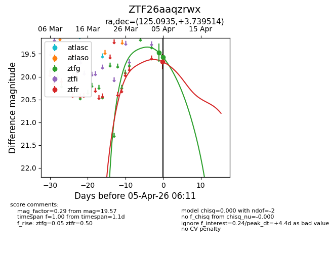
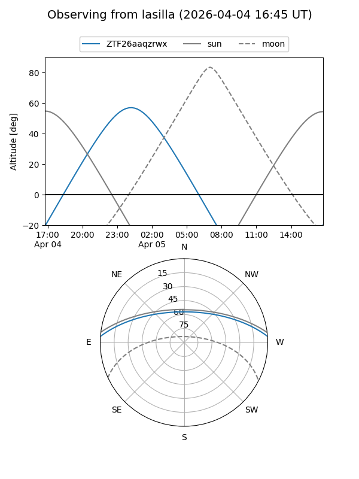
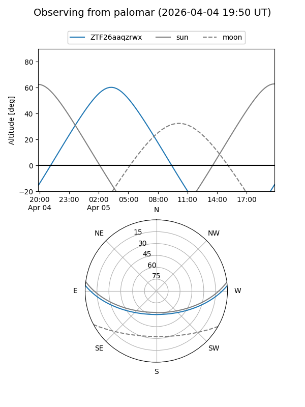
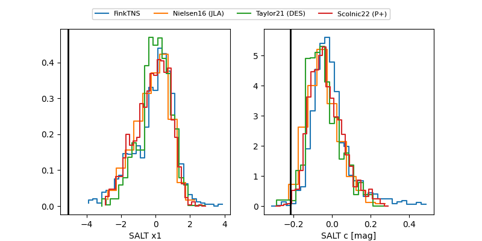

ZTF26aaqzrwx
Target ZTF26aaqzrwx at 2026-04-05 06:15
Aliases and brokers:
FINK: link
Lasair: link
ALeRCE: link
alt names
ZTF26aaqzrwx (ztf,fink_ztf)
Coordinates:
equatorial (ra, dec) = 125.0935,+3.73951
equatorial (HMS+DMS) = 08:20:22.44,+03:44:22.25
galactic (l, b) = (219.9755,+21.45592)
Flags:
Photometry:
last ztfg=19.57, ztfr=19.67
2 ztfg, 1 ztfr detections
Lightcurve

Visibility


Additional plots
